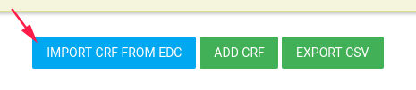
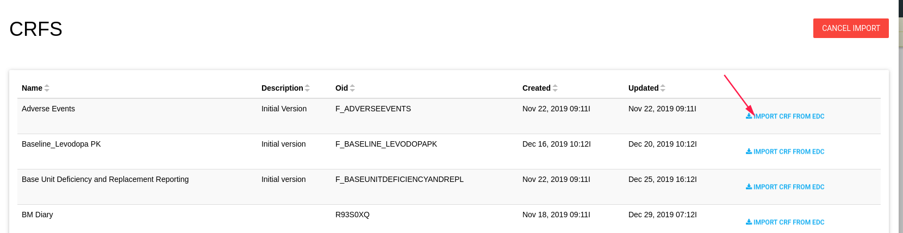
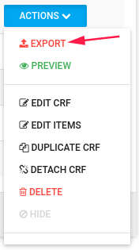
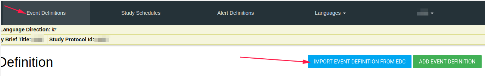
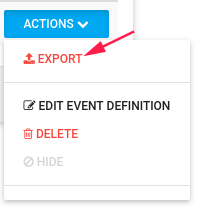
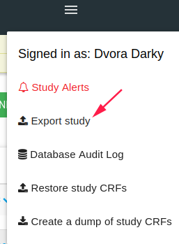

Flask and EDC
You can use FlaskData and ClinCapture Database in parallel for your study.
There are a few functions to connect them:
- Create user in EDC feature - Create a user in flask and they will be created in EDC.
- Create site in Flask - The site will be created in EDC.
- Add subject in Flask - The subject will be added in EDC.
- EDC button - Opens the clincapture in a new window.
- See EDC Queries in tools.
- Download EDC data (CSV files)
- Connect Forms data and EDC data.
Create site
EDC has a lot of connectivity, After you add a site in Flask you must go to EDC and "edit" the site.
Just click edit and save without editing anything.
Relationship between Forms and EDC
If your study uses ClinCapture Database, you can connect the two.
Import CRF from EDC
You can import CRF from EDC to Forms by click on the blue IMPORT CRF FROM EDC button.

The CRF list opens and you can import each CRF needed.

After imported, you can edit the CRF.
Now - You have CRF in Forms related to EDC CRF.
Each CRF data you enter or edit for specific subject in forms will update the EDC CRF data.
To detach the CRF from EDC CRF, go to the CRF list ACTIONS->DETACH CRF

Export CRF to EDC
You can export CRF to EDC by clicking on the ACTIONS->EXPORT option

Example
If the study uses Flask PRO and EDC DB, you can export the study PRO CRFs to EDC.
When the subject inserts data in ePRO, the data is inserted into EDC as well.
Import Event from EDC
You can import event from EDC, including all it's CRFs.
In the Event Definition tab, click on the blue IMPORT EVENT DEFITION FROM EDC button.

Event lists appear and you can import each event from there, edit the imported event, and it's CRFs.
Export Event to EDC
You can export Event to EDC by click on the ACTIONS->EXPORT option

The export window Difference between Flask Event Definition and EDC Event Definition preview shows the event's different definitions between Forms and EDC.
You can export or cancel the export process.
Export study
By click on the Export study Hamburger option, you can export all the Events and CRFs of the study to EDC DB.
